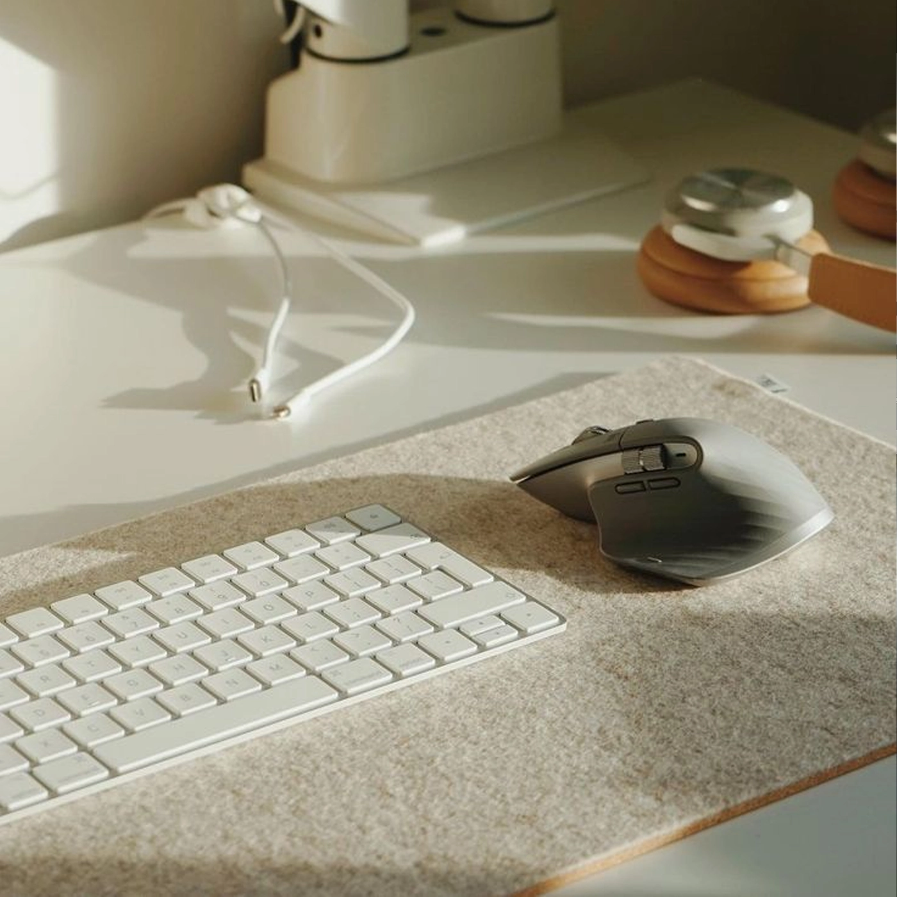
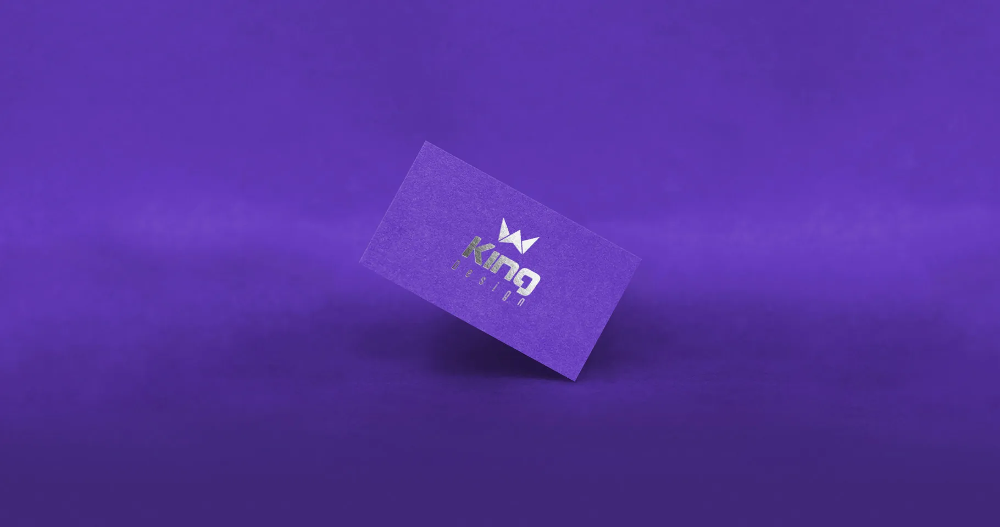
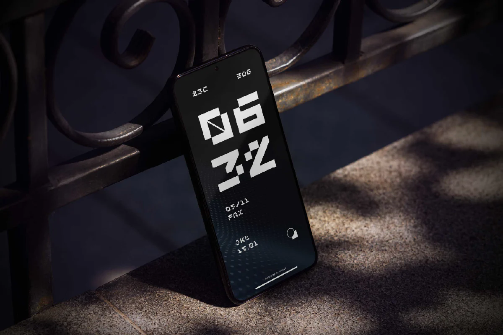
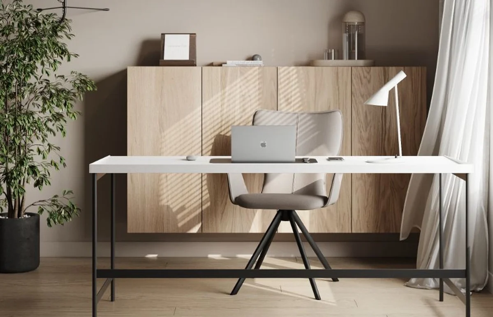
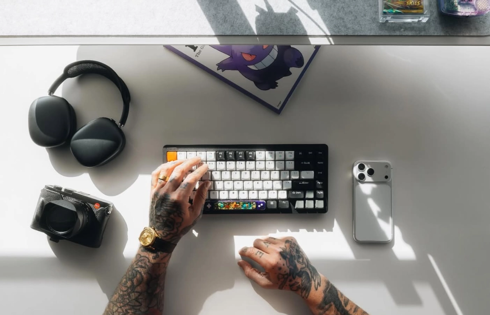

Subtraction isn't minimalism, it's discipline. What you leave out says everything.
Proszę czekać
0%

W czym mogę Ci pomóc.
Jak wygląda mój proces
Każdy projekt zaczynam od poznania Twojego biznesu, celów i wyzwań. Dobry design wymaga kontekstu.

Oni mi zaufali.
Zaczynałem w agencji, gdzie poznałem realia produkcji i nauczyłem się pracować pod presją deadline'ów. Później, prowadząc własne studio King Design, zrozumiałem, że najskuteczniejszy design to ten, który wyrasta ze zrozumienia biznesu klienta i rozwiązuje jego konkretne problemy.
Bliski jest mi sposób myślenia, który Antoine de Saint-Exupéry ujął w słowach:
Zdjęcia prywatne
oraz z moich social mediów.

Subtraction isn't minimalism, it's discipline. What you leave out says everything.

Every decision you make becomes a mirror. Good design isn't about what you build, it's about what you reveal.

Nobody remembers the deliverables. They remember the feeling. That's what I build for.

It's authorship. Curation. Responsibility. It's the invisible pressure behind every pixel.
Subtraction isn't minimalism, it's discipline. What you leave out says everything.
Napisz do mnie. Opowiedz, co planujesz.
Odpowiem w ciągu 24 godzin.